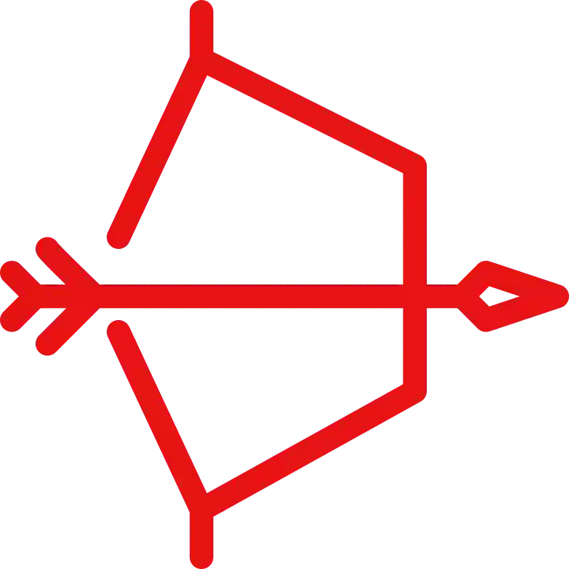

Hobbies: Programar, crear jueguitos, escribir historias locas en Wattpad, subir edits a YouTube, cantar a todo pulmon cuando tengo casa sola, hablar con mi gato o conmigo mismo y romper el CSS sin querer."El humor es el relámpago que parte la oscuridad de lo solemne; sin el, la vida sería una larga noche sin estrellas."
“My essence is not born from order, but from the creative chaos of my ideas.” — me, probably

"Amid discord, we will find tranquility." — Zenyatta

Mi gato como todo un Dios

Mi gato sentado en la cama (como un Dios) y un homero diciendo hola de fondo

Mi gato acostado en el patio de mi antigua casa (acostado como todo un Dios)

Uno de mis dibujos mejores dibujos (de hace años y si este es el mejor entonces imaginate como estara el peor)

No es un dibujo como tal, pero igualmente esto es arte. La casa representa como me gustaria que fuera mi casa en el futuro, la comida representa que me gustaria comer saludable asi, los animales que aparecen porque me encantaria tener alguno de ellos (o todos), el poster de Darth Vader lego sinceramente no lose, quizas porque me encanta Darth Vader y quisiera poder comprarme posters de el, luego Mickey Mouse esta alli volando sin razon alguna
.jpg)
Dibujo de Naruto modo Rikudo Sennin (esta un poco raro pero tampoco quedo tan mal)
.jpg)
Dibujo de Naruto modo Sennin (sin terminar desde hace años, pobresito)

Mi humilde setup para crear caos

Mi pc, TEAMO MIVIDA
.png)
Mi pinguino alias "Dios Facha" el cual cree en un club penguin creado por la comunidad luego de que el original cerrara
.png)
Mi igloo en el club penguin, una locura total, sinceramente creo que es el mejor de todo el juego.

Posters que tengo, pero quiero resaltar a la hermosa Ranni a la cual le rezo siempre
.jpg)
Mi gran compañero Optimus Prime el cual me ha acompañado desde 2013 masomenos, hasta ahora, y seguira por mucho tiempo mas. Te quiero tanto cartuchera de Optimus Prime
.jpg)
Este es un Francisco (muñeco de un compañero) el cual lo hice en 2019, y a pesar de su mal estado aun lo sigo teniendo y me sigue acompañando con su sabiduria (en su pecho con un marcador fluor decia "Grove st 4 Life" pero como se ve ahora ya ni se puede leer)

"It takes a hundred times to learn, a thousand times to understand." — Zenyatta


"Speed. I am speed. One winner, forty-two losers. I eat losers for breakfast." — Lightning McQueen

Death Note el mejor anime de la puta historia chaval. Para mí, no es solo un anime: es una obra maestra que roza la perfección narrativa. Su historia es una locura fascinante, un laberinto de moralidad retorcida tan bien construido que te atrapa desde el primer episodio y no te suelta ni cuando termina. La trama está escrita con una precisión quirúrgica; cada episodio deja esa sensación adictiva de “necesito ver el siguiente ya”.
El duelo entre Light Yagami (Kira) y L es, sin dudas, uno de los enfrentamientos intelectuales más memorables en la historia del anime. No se pelean con puños ni poderes sobrenaturales al uso: su batalla es mental, estratégica, elegante... un verdadero festín para quienes amamos los juegos de ingenio. Ver cómo ambos personajes se desafían, se anticipan y se manipulan es como ver a dos dioses jugando ajedrez con las vidas de los demás.
Y qué decir de los openings. Ambos son obras de arte por derecho propio, cada uno reflejando una etapa emocional y simbólica de la historia. Desde la oscuridad elegante del primero hasta la locura caótica y visceral del segundo, acompañan a la perfección el descenso de Light hacia algo más grande —y más peligroso— que un simple humano con un cuaderno.
Sí, reconozco que después de la muerte de L el ritmo cambia y la emoción inicial se desvanece un poco. Pero aún así, el anime conserva su magnetismo. La historia nunca se vuelve aburrida, solo diferente. Y aunque personalmente creo que Kira tenía todo para ganar y que su caída fue más decisión de guion que consecuencia lógica... eso no cambia mi aprecio. Death Note sigue siendo, para mí, el mejor anime jamás creado.
De hecho, no exagero cuando digo que lo he visto más de diez veces a lo largo de mi vida, y sé que lo volveré a ver muchas veces más. Porque hay algo en su oscuridad, en su inteligencia, en su estilo... que me hace volver a él cada vez que necesito recordar por qué me enamoré del anime en primer lugar.

Elden Ring el mejor juego de la puta historia chaval. No es solo un videojuego; es una experiencia sensorial, emocional y hasta espiritual. Desde el primer paso que das en Las Tierras Intermedias, queda claro que estás entrando en un mundo que fue tallado con devoción y locura. La dirección artística es tan majestuosa que cualquier rincón, por más sombrío o devastado que esté, tiene una belleza melancólica capaz de quitarte el aliento. Literalmente podés pausar el juego en cualquier momento, sacar una captura y tener un fondo de pantalla que podría estar colgado en una galería de arte digital. Así de profundo es su nivel visual.
El apartado sonoro es otra maravilla aparte: las melodías orquestales te envuelven como una sinfonía de tragedia, gloria y misterio. Cada nota, cada ambiente, cada susurro del viento aporta a la inmersión total. No es solo música de fondo, es una narrativa paralela que te dice cosas que el juego no necesita decir con palabras.
Y en cuanto al gameplay... es desafiante, sí, pero increíblemente justo y gratificante. Cada victoria cuesta, pero cada vez que vencés a un jefe monumental sentís que creciste no solo como jugador, sino como persona. Esa sensación de superación que ofrece Elden Ring es incomparable.
La historia es densa, críptica y hermosa. No te la da servida: tenés que buscarla, interpretarla, armarla como un rompecabezas onírico. Pero una vez que empezás a entenderla, se transforma en una epopeya de traición, redención, ambición y eternidad.
Por todo esto, no tengo dudas al decir que para mí, Elden Ring es el mejor videojuego de todos los tiempos. No porque lo diga la crítica o los premios, sino porque logró algo que muy pocos logran: me marcó. Se quedó conmigo después de apagar la consola. Y eso, para mí, lo convierte en algo trascendente.

Game Of Thrones la mejor serie de la puta historia chaval. Game of Thrones no es solo una serie: es un fenómeno narrativo que redefinió el arte de contar historias en televisión. Desde sus primeros minutos te atrapa con una intro inolvidable —una sinfonía de engranajes y mapas que ya anticipa que lo que estás por ver es un viaje complejo, épico y absolutamente envolvente. Cada reino, cada muro, cada bosque está diseñado con una belleza y realismo que te hace olvidar que estás viendo ficción. Su ambientación es sencillamente majestuosa
Pero lo que realmente eleva a Game of Thrones por encima del resto es su desarrollo de personajes. Nadie es puro, nadie es intocable, nadie está completamente a salvo. Es un mundo de fantasía, sí, pero uno donde la crudeza del destino se siente más real que en muchas historias realistas. Ver cómo los personajes evolucionan —algunos hacia la redención, otros hacia la oscuridad— es una experiencia emocional intensa y a veces devastadora.
Los giros argumentales son legendarios. No importa cuán noble sea un personaje, cuán importante parezca: en Westeros, el destino puede cambiar con el filo de una espada, y eso mantiene la tensión en cada episodio. “Cuando jugás al juego de tronos, ganas o mueres”... y es imposible saber cuándo va a pasar.
Cómo olvidar los momentos épicos que quedan tatuados en la memoria. Cuando Daenerys pronuncia “Dracarys” con esa mirada de fuego contenido, no es solo una orden: es una declaración de poder, de justicia —o a veces, de venganza. Esos momentos hacen que se te erice la piel como si estuvieras ahí, respirando el mismo aire que los dragones.
Y entre todos los personajes que cruzan espadas y juramentos en Game of Thrones, hay uno cuya evolución me marcó particularmente: Jaime Lannister. Al comienzo, parecía el arquetipo perfecto del villano arrogante: hermoso, letal, despiadado… y capaz de empujar a un niño desde una torre para proteger su secreto. Pero con el paso del tiempo —y sobre todo tras perder su mano y cruzar caminos con Brienne— Jaime empieza a desmoronarse por dentro, y en ese derrumbe nace algo más humano. Empieza a cuestionarse, a abrirse, a reconstruirse como alguien que ya no quiere ser solo “el Matarreyes”, sino algo más. Algo digno.
Lo fascinante es que, incluso con ese cambio, nunca deja de ser Jaime: fiel a su código, a sus contradicciones… y especialmente, fiel a Cersei. A pesar de todo lo que vivió, del crecimiento, del amor silencioso que supo cultivar con Brienne, al final regresa a su hermana. No porque sea débil, sino porque, para bien o para mal, ella es parte irrompible de lo que lo define. Y su muerte, en ese abrazo final bajo los escombros, lejos de redimirlo o condenarlo, lo cierra como lo que siempre fue: un hombre marcado por la gloria, el amor y la tragedia.
Por todo esto y más, no tengo dudas al decir que Game of Thrones es, para mí, la mejor serie de la historia. No solo por lo que cuenta, sino por cómo lo cuenta. Porque incluso cuando termina, su impacto sigue ardiendo como el aliento de Drogon sobre las ruinas de una corona rota.
Overwatch 2, hablemos de este hermoso y terrible juego. Lo amo y lo odio, de hecho no voy a pasar a limpio mi opinion y decirla asi sin mas.
Puto juego basura, tremenda mierda, en cualquier modo es horrible. No solo su comunidad, sino tambien el juego en si tiene un par de errores y algunas cosas que son horribles.
Empecemos por su terrible comunidad la cual odio mucho, la gente del juego es super toxica la cual insulta de muchas formas, ya sea por el chat general del juego, el de el equipo (porque si los miembros de tu propio equipo te tiran mierda), por voz, tratan de enviarte solicitud para tirarte mas mierda, te tiran emote y se creen buenos usando personajes o heroes que se juegan con los pies (ya hablare sobre eso mas adelante)
La rabia que siento al hablar sobre este juego es indescriptible y tambien cuando lo juego. No puede ser que tanto en partidas competitivas o no competitivas, en cualquiera siempre te toca con gente que parece que se esta pajeando, casi siempre alguien de tu equipo juega con una mano en la chota y otra en el teclado o peor incluso, seguro algunos juegan con los pies o ponen la chota en el teclado y juegan asi, como si estuvieran haciendo un video para youtube o un reto algo como "RETO JUGAR A OVERWATCH CON LOS PIES (termina sexual)". Es que no puede ser y yo no me creo como en competitiva con rangos altos haya gente que juege tan mal, es increible, me hace preguntar como mierda llegaron a ese rango jugando de esa forma tan horrible
Ni yo probando un personaje por primera vez jugaba tan mal a este juego, si he tenido jugadas horribles y demas, pero no al nivel de la gente que me toca en mi equipo todo basura, el cual por mas de que te mandes la jugada del siglo y juegues como los dioses aun asi si tu equipo es una puta basura no podras ganar lo cual me pasa casi siempre. Hay gente que no deberia estar jugando este juego, parece que son unos autistas con problemas motrices, les cuesta mover los dedos para hacer las cosas
El matchmaking esta hecho mierda, es justo lo que dije anteriormente, se supone tienes un rango alto y juegas una partida competitiva esperas que te toque con gente de tu nivel, osea de tu rango, pero el juego se pasa eso por los huevos y no lo hace, te pone con gente que se recontra pajea con las 2 manos mientras juega con las patas al juego. Basicamente el matchmaking es inexistente
Una de mis cosas favoritas que me encanta hablar sobre esta mierda, los personajes o heroes. Existen personajes que son un puto asco, son un cancer y no deberian existir en el juego debido a todo el puto asco que dan y para peor mucha gente lo sabe porque la mayoria que es gente bien y no gente rata rastrilla que anda en las alcantarillas con el maestro splinter.
Son personajes que se juegan solos o que tienen habilidades muy asquerosas. Mi top personajes que mas odio en todo el puto juego es
1 - Sombra
2- Junkrat
3- Venture
4- Pharah
5- Mei
6- Roadhog
Para la gente que juega o jugo este juego creo que no hace falta explicar el porque del odio hacia estos personajes pero aqui voy. La puta Sombra negra basura asquerosa tiene la habilidad pasiva de ser invisible (a menos la vean o la golpeen) creo que ya eso de ser invisible en un juego de disparos habla bastante de el personaje en si, pero es que no solo eso si no que tiene una habilidad toda basura para desaparecer e irse lejos, basicamente estas tranquilamente y te aparece una Sombra de mierda por la espalda a darte tiros, luego de que falle la mayoria porque casi siempre fallan, desaparecen con su habilidad, luego aparecen otra vez y asi estando super molestos, la gente que usa esto es un pedazo de basura andante que le encanta ratonear, y por no hablar de lo peor, es negra y mujer, osea mas razon para odiarla (Dios si castiga 2 veces).
Mi principal razon de odio a estos 2 pedazos de basuras y por lo que los pongo juntos es que ambos se juegan con los pies debido al enorme alcance de sus proyectiles. Ambos disparan y la mierdita que disparan explota y tiene un alcance increible, basicamente apuntan a cualquier lado y te matan por la enorme explosion, literalmente en todas las repeticiones de como me matan veo como tienen la mira en Jamaica, como apuntan para el orto, pero como la mierda de disparo tiene una explosion con hitbox enorme aun asi te dan sin tener que apuntar realmente, que en un juego de disparos es como la ayuda asistida para la gente de consola en algunos juegos osea tremenda ayuda porque solo pones la mira masomenos cerca y ya esta. Lo que distingue a Pharah de la rata puta de Junkrat es que ella esta en el cielo volando como un mosquito y es complicado darle pero eso no es enrealidad lo molesto, lo molesto es la hitbox de sus ataques.
Estos 2 pedazos de putas las odio por sus habilidades de remil mierda de cagonas y asquerosas, ambas tienen habilidades para curarse, pero no es solo eso sino que por ejemplo la gorda puta de Mei se mete en un hielo de remil mierda quedando re dura y curandose, encima dura un monton es horrible, y la Venture parecido, se mete abajo del suelo y se va moviendo el pedazo de mierda, tremendo asco de habilidades para gente rata y puta, sin mencionar que el ataque de la Venture tambien tiene gran alcance, creo que no es tanto como el de Junkrat o Pharah pero si he visto como algunas Ventures apuntando al suelo o simplemente cerca te matan debido a la hitbox de remil cagada.
Tremendo gordo puto, como puede ser que un tanque tenga tanta curacion hermano que puto asco da este gordo asqueroso, encima la gente usa el gancho para tirarte del mapa y se creen buenos por hacer eso, WOW que gran habilidad hermano no puede ser.
Quiero mencionar que tampoco me gusta tener a estos personajes como equipo ya que me dan asco, comparado con los otros personajes, estos son un cancer y son para cagones que juegan con los pies, sin duda alguna tambien estoy consciente que en terminos de estar op la maldita D.Va tambien lo esta ya que en un juego de disparos no tener que recargar eso ya es muy op y encima cuando te matan no te matan realmente solo te bajas del MEKA, por eso deje de jugar un poco como tanque y probe otras cosas, y cuando me tocaba tanque empece a elegir Reinhardt pero aun asi D.Va no me da asco, ni tampoco cuando lo usan contra mi.
El juego a pesar de ser de una gran empresa multimillonaria por alguna razon tiene unos servidores de re mierda que cada tanto se desconectan, en una partida competitiva o normal, se pierde la conexion con el servidor y te saca o saca a todos los jugadores o incluso a veces se reinicia todo, puedes estar a punto de terminar una partida de 3 rondas y se reinicia todo, cambiando de mapa, de modo y todo lo que se habia alcanzado. Tiene unos fallos increibles, e incluso aunque tengas tremenda conexion a internet (el cual es mi caso) aun asi a veces te desconecta por supuestos problemas de internet.
No jueguen este juego, es malo, adictivo y te arruina la vida. No saben en lo que me he convertido desde que juego esto, mi ser se lleno de un odio que crece constantemente de una manera increiblemente rapida, es malo para mi este juego.
Lo unico bueno son los graficos que no estan nada mal, estan lindos y los modos de juego, pero no sirve de nada si con quienes vas a jugar te arruinan la experiencia, no importa que tan bueno seas como dije anteriormente, si tu equipo es una puta mierda, vas a fracasar.
Recomiendo quizas jugar este juego con amigos teniendo un equipo ya armado y no jugar con gente random o la pasaran muy mal.
Le doy 2 cascos en el sistema de calificacion que me saque del orto nomas por sus graficos, diseño de personajes y su historia, ya que si vieron la pagina me encanta Zenyatta, lo considero el mejor personaje del juego.
Probablemente me olvide de muchos puntos o de reforzar algunos pero es que hace meses no juego este juego al momento de escribirlo por lo tanto mi odio en gran parte disminuyo pero sigue estando alli y no se si volver a jugarlo, probablemente lo haga y cuando eso pase mi odio comenzara a crecer nuevamente.
¿Vieron que Itachi le decia Sasuke que le faltaba odio? Bueno, seguramente Itachi jugaba Overwatch y le estaba diciendo a Sasuke que lo jugara, si lo hacia su odio iba a crecer increiblemente.

"Las personas no pueden ser perfectas, todos crean sus propias mentiras." — Light Yagami (Kira)
1: “Slave to the Rhythm”

2: “Leave me alone”

3: “Chicago”

1: “Armageddon”

2: “Spicy”

3: “Next Level”

1: “Set Me Free”

2: “The Feels”

3: “Fancy”

1: “Natural”

2: “Enemy”

3: “Believer”

1: “Numb”

2: “Crawling”

3: “In The End”

1: “Otherside”

2: “Architect”

3: “Shadow”

1: “Anpanman”

2: “Dope”

3: “Dynamite”

1: Disturbed: "Decadence”

2: Bullet For My Valentine: "Hand of Blood”

3: Avenged Sevenfold: "Blinded in Chains”

1: Aleyna Moon: "Fumes”

2: St. Aurora: "Going To Heaven”

3: Skin On Flesh: "El Tiempo”
1: “Toxic”

2: “Baby One More Time”

3: “Oops!...I Did It Again”

1: “Lose Yourself”

2: “Without Me”

3: “Venom”

1: Jojo's Bizarre Adventure: “Sono Chi No Sadame”

2: Shingeki No Kyojin: “Shinzou Wo Sasageyo”

3: Dr. Stone: “Rakuen”

4: Tokyo Ghoul: “unravel”

5: One Piece: “Hope”

6: Fairy Tail: "Believe In Myself"

7: Death Note: "THE WORLD"

8: Mashle: "Bling-Bang-Bang-Born"


“Humor is the lightning that shatters the darkness of solemnity; without it, life would be a long night without stars.” — Hades, in other words, me
"Si quieres una pagina con fondo de fuego difuminado y unos pilares, yo soy el indicado".